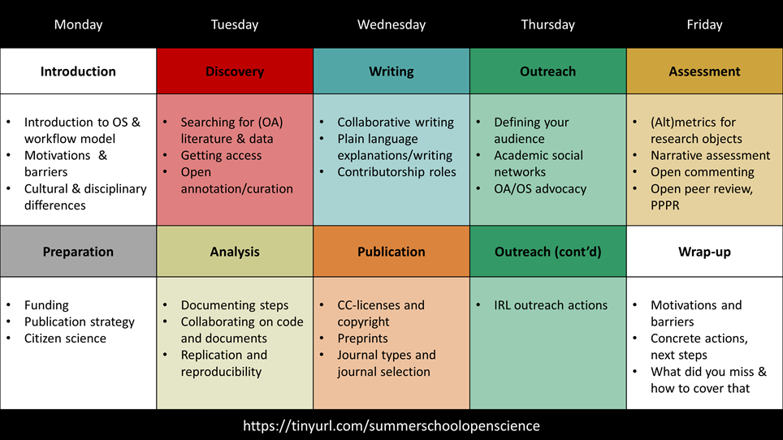
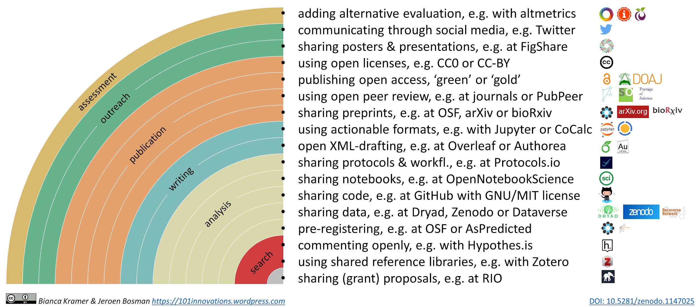

Exemplos e Orientação Prática: adote, adapte, desenvolva
Neste capítulo encontrará um conjunto de materiais que o ajudarão a ativamente envolver os seus formandos numa reflexão crítica sobre os assuntos relativos à Ciência Aberta. Recomendamos que use estes materiais tendo em mente o lema "Adote, adapte, desenvolva" o que significa que, sempre que possível, é melhor reutilizar o que já existe. Assim, antes de começar a desenvolver materiais de formação é aconselhável analisar se já existem materiais que possa utilizar. Apresentamos alguns exemplos de recursos, com sugestões de como podem ser adaptados de acordo com os seus objetivos. Também fornecemos links e estratégias para o ajudar a encontrar mais material. Em algumas situações, os recursos existentes podem ser usados tal como estão, motivo pelo qual pode simplesmente adotá-los. Um dos exemplos pode ser um tutorial em vídeo disponível sobre formatos de ficheiros abertos, o qual pode ser sugerido à sua audiência. Noutras situações, pode ter de adaptar de alguma forma recursos já existentes de forma a que sirvam os seus objetivos. Por exemplo, pode necessitar de acrescentar/substituir referências específicas a uma instituição ou país num documento já existente sobre as exigências em termos de Acesso Aberto por parte dos financiadores de investigação. Apenas em último recurso deve desenvolver os seus materiais de formação. Se pretende desenvolver materiais de formação próprios, garanta que desenvolve Recursos Educativos Abertos para que outros formadores os possam reutilizar e adaptar.
Exemplo de estruturas de formação
Encontros de Ciência Aberta em Göttingen da Biblioteca Universitária da Universidade de Göttingen (3 horas) A Rede de Ciência Aberta de Göttingen, um grupo de investigadores e de bibliotecários que desenvolvem práticas de ciência aberta e de partilha de conhecimento, organizam regularmente estes encontros nos quais vários tópicos da ciência aberta são discutidos. A rede reúne pessoas interessadas em assuntos relativos à Ciência Aberta no Campus de Göttingen, estando aberta a qualquer pessoa. Tornaram-se bastante populares atraindo académicos de vários domínios científicos ansiosos por discutir as suas experiências de educação científica aberta e por aprender sobre novos métodos, ferramentas e práticas. Os temas são apresentados por oradores convidados e, de seguida, pequenos grupos de discussão procuram aprofundar os temas abordados. Mais informação: https://www.sub.uni-goettingen.de/en/electronic-publishing/open-science/
Grupos de estudo Mozilla (um conjunto de reuniões de 2–3 horas)
Grupos de estudo são comunidades de pares (por ex. da mesma instituição) comprometidos em aprender e ensinar-se mutuamente. As suas reuniões, divertidas, informais, permitem aos participantes partilhar competências, experiências e ideias em torno da ciência aberta, software e código aberto e comunidades de investigação. O objetivo do Mozilla Study Group Project é apoiar este tipo de formação entre pares (peer-to-peer) fornecendo um conjunto muito simples de instrumentos, modelos de planos de aula e acesso a uma comunidade internacional de investigadores ávidos por aprender código. (texto adaptado de https://science.mozilla.org/programs/studygroups)
Análise Reprodutível e Transparência na Investigação (workshop de 1 dia)
Transparência, partilha aberta e reprodutibilidade são valores chave da ciência, mas nem sempre da prática quotidiana. Uma primeira iteração deste workshop teve lugar no contexto do evento Open Science Tools, Data & Technologies for Efficient Ecological & Evolutionary Research organizado pela NIOO-KNAW e DANS-KNAW. Fornece uma panorâmica sobre o estado da arte sobre análise reprodutível de forma a garantir transparência na investigação. O workshop abrange aspetos metodológicos (tais como a utilização da Framework da Ciência Aberta e diretrizes de relatórios) bem como ferramentas de software (tais como Git, Docker, RMarkdown / knitr, and Jupyter). Indo além de simples listagens e apresentações, a segunda metade do workshop centra-se na capacitação para fazer, com exercícios e tutoriais cobrindo a quase totalidade dos aspetos de software. Material e conteúdo disponíveis aqui: http://reproducible-analysis-workshop.readthedocs.io
Ciência Aberta: o que tenho a ganhar? (1-2 dias)
O objetivo do workshop é fornecer aos investigadores exemplos práticos de ferramentas e fluxos de trabalho de Ciência Aberta em várias disciplinas e começar a aplicá-las e a discuti-las. Para tal, apresenta-se uma panorâmica sobre as práticas e as ferramentas de Ciência Aberta utilizadas durante o fluxo de trabalho científico, com exemplos práticos, pesquisa de opinião e discussões interativas. O segundo dia é orientado para a aplicação e a partilha. Em várias rondas, os participantes exploram e, sempre que possível, experimentam ou aplicam instrumentos e práticas. Fazem-no em grupos pequenos e individualmente e também num ambiente animado e informal. Na sessão final discute-se os obstáculos e incentivos para incorporar a ciência aberta na investigação realizada pelos próprios. Open Science - what’s in it for me (Vienna, 2017, relatório do workshop)
Open Science - what’s in it for me (Torino, 2018, programa do workshop)
Carpentry workshops (2 dias) O Carpentry workshop é um evento de dois dias de carácter prático (hands-on), que cobre as competências chave necessárias para ser produtivo numa equipa de investigação pequena. Tutoriais breves alternam com exercícios práticos e toda a formação é realizada através de codificação em direto. A Software Carpentry foi fundada em 1998 e a Data Carpentry foi fundada em 2013. Ambas se focam nas competências computacionais, realizando workshops com dois dias de duração com formadores voluntários e têm como objetivo colmatar as falhas existentes na formação correntemente oferecida aos investigadores. Contudo, ambas diferem quer no conteúdo, quer no público-alvo. Os workshops da Data Carpentry centram-se nas boas práticas em torno dos dados. Os seus formandos não são pessoas que querem aprender sobre código mas aqueles que têm muitos dados e não sabem o que fazer com eles. Os workshops da Data Carpentry destinam-se a investigadores em início de carreira, são sobre um domínio específico e apresentam um currículo completo centrado em torno de um único conjunto de dados. Os workshops da Software Carpentry destinam-se a pessoas que necessitam de programar de forma mais efetiva de modo a resolver os seus desafios computacionais, não são específicos a um domínio, e são modulares - cada aula Software Carpentry é autónoma.
Software Carpentry: https://software-carpentry.org
Data Carpentry: http://www.datacarpentry.org/
Programa EIFL Formar-o-Formador (4 dias)
A EIFL organizou um programa formar-os-formadores para cinco universidades em países parceiros da EIFL (Etiópia, Gana, Zimbabué, Tanzânia e Nepal) que se comprometeram a integrar o acesso aberto, a ciência aberta e os dados de investigação abertos em cursos para estudantes de doutoramento. No primeiro dia foram abordados o acesso aberto e os dados abertos. O segundo e terceiro dias foram dedicados à ciência aberta ao longo do ciclo de investigação, incluindo as práticas correntes nas universidades participantes. No quarto dia os participantes conceberam e prepararam o seu próprio programa de formação.
Programa EIFL Formar-o-formador (Addis Ababa, 2017, programa e materiais)
Escolas de Verão Ciência Aberta (5 dias)
Várias universidades em toda a Europa organizam escolas de verão com a duração de uma semana sobre ciência aberta, destinadas principalmente a investigadores em início de carreira. Estes eventos cobrem uma variedade de tópicos em cinco dias, normalmente com muitas atividades práticas para aplicar a ciência aberta na atividade diária.
EPFL Escola de Verão Ciência Aberta em Prática (2017, visão geral do programa)
Utrecht University Escola de Verão Ciência Aberta e Bolsas de Estudo (2017, programa e materiais)
Essex Escola de Verão em Ciências Sociais e Análise de Dados - Introdução à Ciência Aberta (2017, panorâmica sobre o programa)
LERU Escola de Verão Doutoral em Curadoria de Dados (2016, descrição, objetivos de aprendizagem)

Program schedule Escola de Verão Ciência Aberta e Scholarship, Utrecht University 2017
Exemplo de Exercícios
Modelo
Formato, duração
Objetivos de aprendizagem
Descrição do exercício
Materiais e recursos necessários
Nível de conhecimento prévio necessário
Algumas questões a ter em conta
Como adaptar para outros objetivos
Use este formulário Google para sugerir exercícios adicionais
Tipos de exercícios
* aquecimento/ exercícios de curta duração
* exercícios para grupos pequenos
* dramatização
* discussão de tópicos/afirmações sobre Ciência Aberta
* troca de experiências/conhecimentos
* encontro com os investigadores / decisores políticos
* ...
* exercícios em plenário
* mapeamento colaborativo
* jogo de simulação
* inventariação
* jogos de cartas
* apresentações
* dramatização
* apresentação de casos reais /exemplos (também pelos participantes)
* apresentações de conceitos em um minuto (pelos participantes)
* oradores convidados
* ...
* exercícios práticos (individuais ou em pares)
* visualização
* explorar / experimentar instrumentos & plataformas
* implementar uma prática de ciência aberta na sua própria investigação
* verificar a reprodutibilidade de um artigo de investigação
* …
Exemplo de exercícios (incluindo materiais)
| Título | Tema | Tipo | Formato, duração | |
| 1 | Alinhar! | geral | plenário | 5-10 min |
| 2 | Priorizar as necessidades de aprendizagem | Conceito e Princípios da Ciência Aberta | plenário | 10 min |
| 3 | Recolha de boas práticas na área da Ciência Abertas | Conceito e Princípios da Ciência Aberta | plenário | 1-1,5 horas |
| 4 | Discussão sobre Ciência Aberta | Conceito e Princípios da Ciência Aberta | pequenos grupos | 20-30 min |
| 5 | Café com Ciência Aberta | Conceito e Princípios da Ciência Aberta | pequenos grupos | 1.5 horas |
| 6 | O que são dados de investigação para mim? | Dados e Materiais de Investigação Abertos | individual / pares | 15 min |
| 7 | Por que não compartilhar dados? | Dados e Materiais de Investigação Abertos | pequenos grupos | 20 min |
| 8 | Bingo "Desculpas para não compartilhar dados de Investigação" | Dados e Materiais de Investigação Abertos | plenário | 20-30 min |
| 9 | Eu e os meus Dados de Investigação - Datagramms | Dados e Materiais de Investigação Abertos | plenário | 1-4 horas |
| 10 | Encontre seu repositório de dados | Dados e Materiais de Investigação Abertos | individual / pares | 10-15 min |
| 11 | O que é preciso para publicar dados? | Dados e Materiais de Investigação Abertos | plenário | 10 min |
| 12 | Criando metadados | Dados e Materiais de Investigação Abertos | individual / pares | 5 min |
| 13 | Vamos começar a compartilhar software abertamente | Software Aberto Usado na Investigação e Software de Código Aberto | individual / pares | 20-30 min |
| 14 | Criar um fluxo de trabalho de análise de dados reprodutível | Investigação reprodutível e análise de dados | individual / pares | 4-8 horas |
| 15 | Escolha a versão correta para o repositório | Acesso Aberto a Publicações | individual / pares | 15-20 min |
| 16 | Formatos de ficheiros abertos | Open Licensing and File Formats | plenário | 10-15 min |
| 17 | Combinação de Licenças Creative Commons | Licenciamento Aberto e Formatos de Ficheiros | plenário | 5-10 min |
| 18 | Combinações de Recursos Educativos Abertos | Licenciamento Aberto e Formatos de Ficheiros Open Educational Resources | whole group | 10-15 min |
| 19 | Revisão por Pares Aberta | Revisão por Pares Aberta, Métricas e Avaliação | pequenos grupos | 90 min |
| 20 | Revisão por pares aberta - os seus 2 cêntimos | Revisão por Pares Aberta, Métricas e Avaliação | plenário | 1,5 horas |
| 21 | Tomar posição | Políticas de Ciência Aberta | plenário | 10 min |
| 22 | Explicações em linguagem simples | Ciência Cidadã Plataformas Colaborativas | pequenos grupos | 2-3 horas |
| 23 | Advogado do Diabo - convencendo os céticos | Defesa e Promoção da Ciência Aberta | pequenos grupos | 30 min |
| 24 | Configurar um projeto OSF e vincular a outras plataformas | Ciência Cidadã | individualmente ou em pares | 60 min |
| 25 | A armadilha da publicação (em progresso) | Acesso Aberto a Publicações | pequenos grupos | 2 horas |
| 26 | (em progresso) | Dados e Materiais de Investigação Abertos | pequenos grupos | 4 dias (5 horas/dia) |
| 27 | Train-the-trainer card game for Open Science training | Defesa e Promoção da Ciência Aberta | pequenos grupos | 2 horas |
Exemplo 1: Alinhar!
Formato, duração
- Exercício em grupo, 5–10 minutos
Tema
- Quebrar o gelo através de um tema que pode ou não estar relacionado com o workshop
Objetivos de aprendizagem
- Descontrair os participantes
Descrição do exercício
- Uma linha imaginária na sala forma um espectro que vai do grau "Concordo fortemente" ao "Discordo fortemente". Um dos participantes ou o moderador faz uma afirmação (que pode ou não estar relacionada com o workshop, por ex.: “dados de investigação em acesso restrito não devem ser citados” ou “leggings não são calças”). Todos os participantes devem posicionar-se ao longo da linha imaginária. O moderador solicita a alguns participantes que expliquem o seu posicionamento (literal) sobre o tópico.
Materiais e recursos necessários
- Nenhuns
Nível de conhecimento prévio necessário
- Nenhuns
Algumas questões a ter em conta
- O moderador deve garantir que a participação é generalizada devendo convidar os elementos menos participativos a emitir a sua opinião.
Como adaptar para outros objetivos
- Adapte o tipo de pergunta ao contexto. No caso de um novo grupo,permita que os elementos formulemn uma frase sobre um tópico não relacionado com o tema do Workshop. Esta técnica também pode ser usada para "testar as águas" sobre certos temas controversos, em especial para pessoas que já trabalham em conjunto há algum tempo (por ex. no segundo dia de um Workshop).
Exemplo 2: Priorizar as necessidades de aprendizagem
Formato, duração
- Plenário, cerca de 10 minutos
Tema
Objetivos de aprendizagem
Identificar lacunas ou áreas do conhecimento em que os participantes sentem que necessitam de formação.
Identificar áreas em que os participantes se sentem confortáveis e nas quais possam partilhar o seu conhecimento (opcional).
Descrição do exercício
Explique brevemente o ciclo de investigação e as atividades associadas.
Identifique junto de cada um dos participantes duas ou três atividades ligadas com a Ciência Aberta em que necessitam de formação.
Pode também pedir aos participantes para identificar duas ou três áreas relacionadas com a Ciência Aberta em que se sintam confortáveis (opcional).
Na folha que foi distribuída, cada participante assinala os tópicos com autocolantes.
Os participantes em conjunto assinalam da mesma forma a folha distribuída para o grupo.
Os resultados são discutidos em grupo. É necessário assegurar que, na observação dos autocolantes na folha, os participantes compreendem que têm oportunidade de aprender uns com ou outros.

Materiais e recursos necessários
Impressão de folhas com o research cycle with activities. Distribuição a cada um dos participantes e uma para cada grupo.
Autocolantes de duas cores

Nível de conhecimento prévio necessário
- Nenhuns; é benéfico estar familiarizado com o ciclo de investigação e as suas várias etapas.
Algumas questões a ter em conta
Este exercício é mais adequado em programas de formação mais longos, onde são abordados vários tópicos.
Escolha autocolantes com cores visíveis para daltónicos.
O número de atividades a desenvolver depende do número de participantes (por ex.: três tópicos de discussão para grupos pequenos, dois para grupos grandes).
É preferível usar material impresso individual para prevenir quelquer tipo de pressão ou preconceito por parte dos pares.
As folhas distribuídas individualmente podem ser mantidas como referência durante o programa de formação.
Como adaptar para outros objetivos
- Este exercício pode facilmente ser adaptado para priorizar as necessidades formativas noutros tópicos.
Exemplo 3: Recolha de boas práticas na área da Ciência Aberta
Formato, duração
- Plenário, 1h-1h30
Tema
Objetivos de aprendizagem
Conhecer o conjunto de práticas de Ciência Aberta associadas ao ciclo de investigação.
Avaliar quais as práticas mais viáveis e eficazes em que se focar.
Descrição do exercício
Antes do exercício, distribua pela sala (ex.: mesas ou numa área do piso) cartões classificados segundo a etapa do ciclo de investigação.
Registe na parede, janela ou quadro as diferentes etapas do ciclo de investigação (ex.: preparação, descoberta, análise, escrita, publicação, divulgação, avaliação).
Convide os participantes a selecionar as práticas de Ciência Aberta que consideram mais relevantes. Cada uma das práticas selecionadas deve ser afixada na parede tendo em conta a etapa do ciclo de investigação em que se inserem.
Incentive os participantes a adicionar práticas de investigação que não estão incluídas nos cartões.
Divida os participantes em sete grupos.
Cada grupo deverá avaliar as práticas selecionadas para a etapa do ciclo de investigação que lhe foi atribuída e destacar as duas práticas que considerem mais viáveis para implementação e que promovam a investigação aberta de forma mais efetiva. Os cartões com as duas práticas selecionadas devem ser posicionados no topo da lista na parede ou em alternativa removidos todos os cartões com exceção dos que contêm as práticas selecionadas.
Cada grupo deverá justificar a sua escolha perante todos os participantes.
Em conjunto, as atividades de investigação selecionadas formam um diagrama das práticas de Ciência Aberta.
Como exercício de seguimento, os participantes podem discutir os passos necessários para implementar as práticas selecionadas:
que ferramentas e plataformas podem ser usadas
quais seriam os potenciais incentivos e desafios
que suporte técnico seria necessário
que mudanças políticas seriam necessárias


Materiais e recursos necessários
Uma parede, janela ou vários quadros para afixar o material
Espaço com área suficiente para a movimentação dos vários grupos
Impressão dos cards with open science practices (disponíveis também em editable powerpoint slides ou em Google spreadsheet)
Cartões em branco e canetas/ marcadores
Pioneses ou fita-cola
Nível de conhecimento prévio necessário
- Nenhuns; é benéfico estar familiarizado com o ciclo de investigação e as suas várias etapas
Algumas questões a ter em conta
Dependendo do número de participantes, pequenos grupos podem priorizar as práticas de mais do que uma etapa do processo de investigação.
Teste a colagem e remoção dos materiais nas paredes/janelas pois algumas são bastante difíceis de remover.
Os grupo pode não concordar com as práticas selecionadas por um sub-grupo para uma determinada etapa do processo de investigação. Antes de iniciar o exercício, decida se as atividades indicadas por cada um dos grupos podem ou não ser discutidas até se chegar a um consenso.
Como adaptar para outros objetivos
O exercício pode ser modificado para se focar numa determinada atividade ou etapa do ciclo de investigação (por ex.: publicação ou avaliação).
Podem ser utilizados outros critérios, por ex.: levantamento das práticas dos participantes, ou as práticas "ideais" (independentemente da viabilidade/ esforço necessário).
Exemplo 4: Tópicos de discussão sobre Ciência Aberta
Formato, duração
- Pequenos grupos, 20-30 minutos
Tema
Objetivos de aprendizagem
- Confrontar a experiência e opinião individual sobre Ciência Aberta com a perspetiva de outros

Descrição do exercício
Divida os participantes em grupos de quarto ou cinco elementos e distribua tópicos para discussão (por ex.: impressos em papel).
Promova a discussão dos tópicos em grupo com base na perspetiva de cada participante.
Cada grupo deverá destacar os pontos mais importantes resultantes da discussão (opcional).
Sugestões para tópicos de discussão:
"Desenvolver práticas de Ciência Aberta torna a investigação mais divertida"
“A Ciência Aberta pode ser uma escolha difícil para os investigadores porque sentem que as suas ideias podem ser publicadas primeiro por outros”
“O principal desafio para publicar em acesso aberto são os custos associados à publicação (Article Processing Charges)”
"As agências de financiamento e o governo deviam apoiar de forma mais evidente a Ciência Aberta”
"A revisão por pares aberta pode ser problemática para investigadores em início de carreira"
"Devíamos encarar os cidadãos cientístas com maior seriedade, e não apenas como fornecedores de dados”
"Os rankings de avaliação são um sintoma e não a causa na corrida à publicação"
"Não há nenhuma razão para que, depois de concluído, não se publique um preprint"
"Partilhar dados de investigação é uma boa prática, mas para a rápida proliferação da Ciência é necessário garantir a interoperabilidade e a reutilização dos dados"
"Partilhar ideias e projetos no ResearchGate é uma boa forma de divulgar a sua investigação"
“Provavelmente as orientações dos investigadores principais são a razão pela qual os jovens investigadores não se envolvem mais nas práticas de Ciência Aberta”
"Deve apostar-se na criação de plataformas para a partilha de resultados e objetos de investigação de forma a promover a colaboração e a sua reutilização"
Materiais e recursos necessários
- Folhas impressas com os tópicos para discussão
Nível de conhecimento prévio necessário
- Estar familiarizado com o ciclo de investigação.
Algumas questões a ter em conta
- Este exercício é mais adequado para investigadores do que para pessoal de apoio à investigação, porque eles podem identificar-se com as situações e falar da sua experiência.
Como adaptar para outros objetivos
- Alterando as afirmações, este exercício pode ser adaptado a outros tópicos.
Exemplo 5: Café com Ciência Aberta
Formato, duração
- Pequenos grupos, 1h30
Tema
Objetivos de aprendizagem
Ter conhecimento das diferentes valências da Ciência Aberta.
Discussão de tópicos entre os vários intervenientes nos processos ligados com a Ciência Aberta.
Descrição do exercício
Um grupo de 6-8 elementos reúne-se à volta de uma mesa com um moderador e um relator. É distribuído um baralho de cartas que contém afirmações e questões ligadas com a Ciência Aberta e projetos associados. Estas afirmações servem para iniciar a conversa. Um elemento do grupo retira uma carta do baralho e o grupo deverá discutir esse tópico, e após discussão é retirada uma nova carta. A discussão permite a aprendizagem mútua entre os vários participantes e que o tópico possa ser perspetivado de uma forma mais global. Entretanto deverá recolher os resultados da discussão.
O relator pode registar os resultados da discussão de duas formas:
Cartões para o mapa conceptual: registe em cartões os tópicos mais relevantes na discussão. Caso a troca de ideias seja demasiado rápida, interrompa a discussão para obter mais informação junto dos participantes. No centro ficará registado o tópico principal da discussão e a partir daí são registados os resultados e as conexões entre os mesmos. Caso seja difícil estabelecer ligações entre os resultados da discussão opte por registar pensamentos e frases aleatórias.
Ideias e frases brilhantes: às vezes alguém diz qualquer coisa brilhante, precisa ou muito útil. Para registá-la use a carta das ideias e frases brilhantes. Só pode exisir uma, por isso há que ser muito selectivo. O objetivo é selecionar apenas as ideias/afirmações que se destacam na discussão.
Após 20-30 minutos de discussão, os participantes trocam de mesa. O moderador e o relator permanecem na sua mesa.
No final, cada moderador deverá relatar os resultados dos diferentes grupos de discussão.
Materiais e recursos necessários
Um baralho de cartas LIBER Science Café card deck, ou um conjunto de impressões com tópicos para discussão World Café
Uma mesa com capacidade para 6-8 pessoas
Exemplo 6: O que são dados de investigação para mim?
Formato, duração
- Individual/pares, 15 minutos
Tema
Objetivos de aprendizagem
- Conhecer os seus próprios dados de investigação e os dados na sua área de pesquisa
Descrição do exercício
- Peça aos participantes que pensem sobre os últimos artigos que escreveram/leram. Havia material suplementar (e.g., tabelas, imagens)? Peça que anotem exemplos e tipos de dados de investigação na sua área de pesquisa. Que informação ou dados seriam necessários para que pudessem reanalisar o estudo? O que seria necessário para as suas próprias dissertações/artigos serem compreendidos corretamente? Peça que apresentem os seus resultados em pares/grupos e depois em plenário
Materiais e recursos necessários
- Uma folha de papel e uma caneta
Nível de conhecimentos prévios necessário
- Não é necessário ter conhecimentos prévios
*Algumas questões a ter em conta
* Dar tempo suficiente aos participantes para debate
Como adaptar para outros objetivos
- A atividade pode ser encurtada se passarem à frente o trabalho de pares/grupos e apenas discutirem em plenário
Exemplo 7: Por que não compartilhar dados?
Formato, duração
- Grupos pequenos, aproximadamente 20 minutos
Tema
Objetivos de aprendizagem
- Fazer com que os participantes pensem sobre as barreiras práticas e éticas da partilha de dados, e analisem de forma crítica as suas opiniões sobre este assunto.
Descrição do exercício
- Em pares ou em grupos pequenos, os participantes têm cinco minutos para fazer uma lista o mais completa possível com os motivos pelos quais os investigadores possam não querer partilhar os seus dados. Em seguida os participantes apresentam os motivos, discutem se são válidos ou não, e quais as estratégias para ultrapassar as preocupações legítimas. A equipa com maior número de motivos identificados ganha (prémio opcional).
Materiais e recursos necessários
- Material para tomar notas (caneta, papel, ou documento eletrónico); opcional: prémio.
Nível de conhecimentos prévios necessário
- Conhecimento prático de trabalho com dados
Algumas questões a ter em conta
- O exercício deverá ser divertido, e os participantes devem ser encorajados a dar exemplos divertidos, bem como sérios.
Como adaptar para outros objetivos
- O mesmo formato poderá ser facilmente adaptado para muitos outros elementos da Ciência Aberta, e.g., Acesso Aberto (porque não publicar em Acesso Aberto, etc.)
Exemplo 8: Bingo "Desculpas para não compartilhar dados de Investigação"
Formato, duração
- Trabalho de grupo, 20–30 minutos
Tema
Objetivos de aprendizagem
- Ser capaz de reconhecer estereótipos que impedem a partilha de dados de investigação e compreender as vantagens dos dados de investigação abertos.
Descrição do exercício
- Este exercício deverá ser feito no início da sessão de formação. Os participantes são divididos em pelo menos dois grupos ou mais (dependendo do tamanho do grupo). O formador assegura que um grupo irá desenvolver argumentos a favor e o outro grupo irá contra-argumentar. Em grupos pequenos, os participantes irão discutir desculpas já identificadas no "Open Data Excuse" Bingo, estes são os argumentos mais comuns que são utilizados pelos investigadores justificando porque não podem partilhar os seus dados. Nos últimos 10 minutos os participantes deverão confrontar os seus argumentos. O formador irá ajudar os participantes a identificar argumentos para compartilhar os seus dados de investigação e para compreender melhor as razões para partilhar os seus dados.
Materiais e recursos necessários
- Folhas impressas de "Open Data Excuse" Bingo
Nível de conhecimentos prévios necessário
- Os participantes deverão ter experiência de criação/recolha de dados de investigação.
Algumas questões a ter em conta
- Circule e tente ajudar a identificar argumentos se necessário, especialmente no grupo que está a desenvolver argumentos fortes a favor da partilha de dados. Poderá ser necessária uma ajuda extra para estes participantes serem mais fortes no confronto com os participantes do outro grupo.
Como adaptar para outros objetivos
- Este exercício pode ser adaptado a outros temas (os materiais também terão de ser adaptados)
Exemplo 9: Eu e os meus Dados de Investigação - Datagramms
Formato, duração
- Exercício de grupo, 1–4 horas (se feito como parte de um workshop)
Tema
Objetivos de aprendizagem
- Compreender os que são dados de investigação e que tipo de repositório é necessário para arquivá-los corretamente
Descrição do exercício
É pedido aos participantes que pensem no último trabalho de investigação feito relativamente à sua tese (Licenciatura, Mestrado, our Doutoramento) e para refletir sobre o tipo de dados que produziram.
Eles irão criar um datagramm, isto é, escrever num cartão
a área de estudo
o título da tese
um conjunto de cartas, indicando
o formato (pdf, doc, csv, ou similar)
o tamanho (kb, mb, gb, tb, etc.)
o meio (como A para analógico, D para digital, isto é, digitalizado e E para eletrónico, ou combinações dos três)
e finalmente o tipo de dados, diferenciando aproximadamente entre O para observações, E para experiências, S para simulações, D para derivações, R para referências e D para dados digitalizados, ou combinações entre eles.
Em várias etapas, todos os cartões são agrupados numa parede de acordo com as cartas (formato, tamanho, meio, e tipo)
O grupo discute os diferntes conjuntos e reflete sobre os requisitos de um repositório ou arquivo de dados abertos.
Materiais e recursos necessários
- Cartões e flipcharts, ou uma parede e material para afixar os cartões na parede
Nível de conhecimentos prévios necessário
- Nenhum desde que o exercício comece com algumas explicações sobre como descrever e diferenciar dados. Conhecimento básico sobre dados de investigação, repositórios, e arquivos poderão ser úteis.
Algumas questões a ter em conta
- Faça uma abordagem passo a passo
Como adaptar para outros objetivos
- ainda não aplicado
Exemplo 10: Encontre seu repositório de dados
Formato, duração
- Individual / pares, 10–15 minutos
Tema
Objetivos de aprendizagem
- Conhecer os repositórios de dados específicos de cada área e as suas características e padrões
Descrição do exercício
- Os participantes devem encontrar um repositório de dados para os seus dados de investigação. Para o efeito, vão ao re3data.org e pesquisam por área e/ou por tipo de conteúdo. Peça que limitem a sua pesquisa a repositórios de dados com atribuição de DOI. Dê-lhes tempo para analisar a descrição do repositório e que registem os repositórios relevantes. A seguir discutam os seus sucessos e experiências.
Materiais e recursos necessários
- Computador com ligação à internet para cada um dos participantes (pode ser feito em pares se necessário)
Nível de conhecimentos prévios necessário
Os participantes deverão saber que tipo de dados de investigação produzem
Não applicável a estudantes de licenciatura
Algumas questões a ter em conta
- Alguns participantes poderão não conseguir encontrar um repositório adequado, portanto prepare uma lista de repositórios genéricos e institucionais que possam ser utilizados e apresente-os posteriormente
Como adaptar para outros objetivos
- Este exercício poderá ser adaptado para o Acesso Aberto recorrendo ao site do Directory of Open Access Journals (DOAJ) (https://doaj.org)
Exemplo 11: O que é preciso para publicar dados?
Formato, duração
- Exercício de grupo, 5–10 minutos (dependendo do tamanho do grupo)
Tema
Objetivos de aprendizagem
- Lembrar os passos necessários para a publicação de dados
Descrição do exercício
- Este exercício deverá ser utilizado no final da formação. Deixar os participantes jogar ao "Estou a fazer a mala" à medida que vão identificando os elementos necessários para a publicação de dados (por exemplo, Dados de investigação (ficheiros), metadados, palavras-chave, documentação, licenças, ORCID, repositório, um bom título, referências/fontes, citação de dados, tempo, e coragem!)
Materiais e recursos necessários
- Não é necessário nenhum material ou recurso
Nível de conhecimentos prévios necessário
- Os participantes deverão conhecer os elementos básicos de publicação de dados
Algumas questões a ter em conta
Se os particpantes esquecerem um elemento, tentar ajudar ou dar pistas
Identificar como último elemento "coragem"
Como adaptar para outros objetivos
- Também pode ser adaptado ao processo de publicação em acesso aberto
Exemplo 12: Criando metadados
Formato, duração
- Individual / pares, 5 minutos
Tema
Objetivos de aprendizagem
- Ser capaz de criar metadados para os dados de investigação
Descrição do exercício
- Peça aos participantes que escolham um ficheiro em que estejam a trabalhar. Peça que eles respondam numa folha de papel às seguintes questões: Quem foi o autor deste conteúdo? Qual é o conteúdo? Quando é que o conteúdo foi criado? Como é que o conteúdo foi criado? Porque é que o conteúdo foi criado? A seguir discutam os seus resultados. Foi fácil ou difícil? A tarefa pode ser repetida para todos os ficheiros do processo de investigação?
Materiais e recursos necessários
- Uma folha de papel (ou um formulário preparado) e uma caneta
Nível de conhecimentos prévios necessário
- Não é necessário conhecimento prévio
Algumas questões a ter em conta
Para que o exercício seja mais rápido preparar um formulário e imprimir ou disponibilizar online.
Para projetos maiores com muitos ficheiros disponibilizar um modelo de dicionário de dados
Como adaptar para outros objetivos
- Também pode ser adaptado como exercício de documentação
Exemplo 13: Vamos começar a compartilhar software abertamente
Formato, duração
- Individual ou pares, 20–30 minutos
Tema
- [Software Aberto Usado na Investigação e Software de Código Aberto] (02IntroducaoaCienciaAberta/03Software_Aberto_Usado_na_Investigacao_e_Software_de_Codigo_Aberto.md)
Objetivos de aprendizagem
Aprender a usar ferramentas e serviços para compartilhar código de investigação abertamente.
Ser capaz de escolher a licença apropriada para o software e entender a diferença entre licenças permissivas e licenças não permissivas.
Descrição do exercício
Este exercício é destinado a qualquer investigador que vá usar software/código na sua pesquisa, quer seja trabalho puramente computacional ou trabalho experimental (utilização do software para análise, etc.)
Primeiro, deve pedir a todos que se registem numa conta gratuita do GitHub se ainda não tiverem uma. Esta conta gratuita será suficiente para trabalhar exclusivamente com código aberto/público, embora deva dizer-lhes que estudantes, docentes e investigadores podem solicitar autorização para uma conta profissional gratuita.
Adicionalmente, deve pedir que os participantes façam uma conta Zenodo, e a liguem à sua conta do GitHub.
De seguida, todos devem criar um novo repositório público, escolhendo uma licença apropriada baseada nas permissões desejadas - choosealicense.org pode ser útil neste caso. No Zenodo, permita a integração GitHub–Zenodo para este repositório.
Deve pedir aos participantes que adicionem o(s) seu(s) ficheiro(s) fonte ao repositório e deve acrescentar uma descrição do programa/script ao ficheiro README. Logo que estes ficheiros estejam adicionados, escolha um número de versão e crie uma release do software.
Entre no Zenodo e obtenha o DOI que foi gerado para o seu software.
Parabéns, o seu software é agora citável! Pode acrescentar uma secção ao ficheiro README com o DOI e a citação sugerida, ou até acrescentar o crachá do DOI que o Zenodo fornece.
Materiais e recursos necessários
Os participantes necessitam de ter um computador ligado à Internet.
Os participantes devem ter algum código, script ou programa pronto — mesmo que "desorganizado" — que irão partilhar publicamente.
Nível de conhecimento prévio necessário
- Nenhum
Algumas questões a ter em conta
- Nenhuma
Como adaptar para outros objetivos
- Não aplicável
Exemplo 14: Criar um fluxo de trabalho de análise de dados reprodutível
Formato, duração
- Individualmente e em grupo, 4–8 horas (exemplo aqui)
Tema
Objetivos de aprendizagem
Usar uma (pequena) tarefa computacional relevante para a sua disciplina/formação e estabelecê-la como um fluxo de trabalho aberto e reproduzível.
Entender os conceitos chave, as ferramentas e serviços que são úteis neste contexto de reprodutibilidade.
Descrição do exercício
Cada participante seleciona um conjunto de dados e o correspondente processo de análise de dados que é relevante para a sua área. Tanto o conjunto de dados quanto o processo de análise devem ser suficientemente reduzidos para ser concluídos em poucos minutos. Além disso, para os objetivos deste exercício, a linguagem de programação deve ser Python ou R, mas outras linguagens podem ser usadas com pequenas alterações nas ferramentas subjacentes.
O participante, de início, executa o processo no formato tradicional e, em seguida, solicita a um dos outros participantes que o execute novamente sem ajuda externa. Identifique o tempo necessário para outra pessoa executar o mesmo processo, assim como os obstáculos encontrados.
Aplique o mesmo processo usando a abordagem Jupyter / Git / MyBinder; escreva o processo como um bloco de notas Jupyter, carregue o conjunto de dados e o bloco de notas para um repositório no GitHub e, em seguida, conecte o repositório ao mybinder. Depois disso, pergunte novamente à mesma pessoa para executar de novo a tarefa. Identifique a mudança no tempo e a acessibilidade.
Materiais e recursos necessários
- Jupyter and Git são necessários (incluindo uma conta no GitHub). Dependendo da linguagem, pode ser necessário instalar também núcleos/kernels no Jupyter. Finalmente, o formador pode decidir se fornece um exemplo comum para todos os participantes usarem ou se pede aos participantes para trazerem o seu próprio exemplo. A diferença está na quantidade de tempo requerido para a preparação, assim como na uniformidade da experiência de cada participante.
Nível de conhecimento prévio necessário
- O workshop pode ser realizado para os diferentes níveis esperados de aprendizagem anterior, adaptando o tempo. Por exemplo, uma breve introdução ao Git pode ser incluída mas, para todo os casos, os participantes devem estar cientes dos requisitos computacionais da sua própria análise.
Algumas questões a ter em conta
O conceito geral é simples, mas tem uma curva inicial de aprendizagem sobre os componentes individuais. Portanto, pode-se considerar gastar algum tempo extra no início, discutindo cada ferramenta antes de as conectar a todas.
Deve ponderar proporcionar aos participantes uma explicação detalhada sobre o processo de instalação (por ex. para o Jupyter e o Git), antes de iniciar o workshop, de modo a minimizar possíveis questões técnicas.
Como adaptar para outros objetivos
- O workshop pode ser alargado para introduzir conceitos adicionais da Ciência Aberta, como sejam os Identificadores Persistentes para software (como atribuir um DOI do Zenodo ao repositório do Git), assim como para a integração de todos os aspetos sob uma plataforma comum (como o OSF).
Exemplo 15: Escolha a versão correta para o repositório
Formato, duração
- Individual /pares, 15–20 minutos
Tema
Objetivos de aprendizagem
- Ser capaz de decidir qual é a versão mais apropriada para ser depositada num repositório e declarar o seu regime de Direitos de Autor.
Descrição do exercício
- Este exercício pode ser dirigido a gestores de repositórios. Escolha cinco publicações diferentes e solicite aos participantes para selecionarem a versão mais apropriada para ser depositada num repositório e que informação /aviso sobre Direitos de Autor eles incluiriam - quem é o detentor dos direitos de autor e que regime de direitos de autor seria mantido: todos os direitos reservados, uma licença, domínio público. Discuta os resultados e mostre os elementos fundamentais que definem as soluções a adotar.
Materiais e recursos necessários
Este exercício pode ser realizado com uma folha de papel (ou um formulário preparado) e uma caneta.
Individuos/pares necessitam de ter uma ligação à Internet para aceder aos documentos e para confirmar as políticas. Também poderá fornecer cópia dos artigos em papel.
Nível de conhecimento prévio necessário
Noções básicas de Direitos de Autor.
Conhecimentos sobre diferentes versões de um trabalho de investigação.
Algumas questões a ter em conta
O exercício pode ser transposto para uma versão online se preparar um conjunto de pesquisas.
Use uma série de publicações incluindo, por exemplo, artigos publicados em modelos híbridos, de forma a mostrar aos participantes que não basta procurar sites com políticas de auto arquivo predefinidas.
O número de casos irá determinar o tempo necessário para o exercício.
Como adaptar para outros objetivos
- Pode ser adaptado a sessões de formação com investigadores usando os seus próprios artigos.
Exemplo 16: Formatos de ficheiros abertos
Formato, duração
- Exercício em grupo, 10–15 minutos
Tema
Objetivos de aprendizagem:
- Tomar consciência dos formatos de ficheiro usados diariamente e do seu grau de abertura.
Descrição do exercício
- Peça aos participantes para escreverem em post-its todos os formatos de arquivo que usam no seu trabalho diário. Depois, pegue nos post-its e cole-os no quadro branco ou no flipchart. Tente agrupá-los da melhor maneira possível em categorias ou grupos (texto, tabular, estatística, vídeo, imagem, etc.). De seguida, discuta os resultados com a sua audiência. Fale sobre o grau de abertura desses formatos de arquivos e possíveis alternativas.
Materiais e recursos necessários
- Alguns blocos de post-its, caneta e quadro branco ou flipchart.
Nível de conhecimento prévio necessário
- Nenhum
Algumas questões a ter em conta
- Prepare-se para formatos de arquivo "exóticos" especializados num assunto ou dependentes de equipamentos, e peça que os participantes os descrevam
Como adaptar para outros objetivos
- Também pode usar ferramentas da Web, tais como [PINGO] (http://trypingo.com) para a recolha de formatos de arquivo ou deixá-los anotar os seus formatos de arquivo numa folha de papel e recolhê-los, se não quiser usar post-its
Exemplo 17: Combinação de Licenças Creative Commons
Formato, duração
- Exercício em grupo, 5–10 minutes
Tema
Objetivos de aprendizagem:
- Ser capaz de distinguir entre diferentes licenças Creative Commons e ser capaz de as combinar de acordo com o resultado de investigação.
Descrição do exercício
- Os participantes devem combinar duas licenças. Deixe o grupo adivinhar que licença Creative Commons é criada com a combinação. Repita o exercício com outras combinações. Integre uma combinação que não é possível (por exemplo, CC BY-SA e CC BY-NC) e aponte os obstáculos. Discuta os resultados com os participantes.
Materiais e recursos necessários
- Computador com projetor, quadro branco, flipchart ou uma folha de papel para todos os participantes.
Nível de conhecimento prévio necessário
- Os participantes devem conhecer todas as licenças Creative Commons e/ou ter um documento de apoio.
Algumas questões a ter em conta
- Espere mais do que três segundos antes de responder. Isso permite aos participantes pensarem sobre o assunto e permite-lhe integrar mesmo os participantes mais fracos.
Como adaptar para outros objetivos
Primeiro, crie pares e deixe-os resolver as combinações, depois discuta as soluções no grupo.
Use outras licenças.
Exemplo 18: Combinações de Recursos Educativos Abertos
Formato, duração
- Exercício em grupo, 10–15 minutos
Tema
Objetivos de aprendizagem
Distinguir os diferentes elementos das licenças Creative Commons
Criar conteúdos através da recolha e análise de trabalhos anteriores com várias licenças, incluindo domínio público e todos os direitos reservados, e determinar qual será a licença adequada aos novos conteúdos.
Descrição do exercício
Existe uma Versão online http://www.opencontent.org/game/ e uma versão impressa do jogo http://www.opencontent.org/game/print/
Temos um baralho de cartas com diferentes conteúdos: texto, imagem, música e vídeo, trazendo cada um deles um sinal de copyright das mais diferentes origens desde todos direitos reservados até ao domínio público, incluindo o conjunto de licenças Creative Commons e a licença de Documentação Aberta / Livre GNU.
Um dos elementos do grupo traz 12 cartas enquanto os restantes elementos têm de trabalhá-las produzindo um trabalho contendo os quatro tipos de conteúdo: texto, imagem, música e vídeo. Uma vez decidida a formulação correta o grupo terá de decidir qual a licença adequada para o novo trabalho.
Materiais e recursos necessários
Para o jogo online: computador com projector
Para o jogo impresso: o baralho de cartas disponível em http://www.opencontent.org/game/print/ ou um baralho criado por si próprio.
Nível de conhecimento prévio necessário
- Os participantes devem conhecer as especificidades de todas as licenças Creative Commons e ter uma noção básica das questões de direitos de autor incluindo a noção de copyleft.
Algumas questões a ter em conta
- Se usar a versão online o exercício deve ser feito para toda a audiência, permitindo várias respostas.
Como adaptar para outros objetivos
Pode-se a adaptar para resultados de investigação, por exemplo licenciamento de software.
Pode-se usar outras licenças, incluindo novos conteúdos ou definindo quais os conteúdos que devem constar do trabalho final.
Exemplo 19: Revisão por pares aberta
Formato, duração
- Pequenos grupos, 90 minutos
Tema
Objetivos de aprendizagem
Escrever revisões por pares construtivas
Reflexão crítica sobre as vantagens e desvantagens da revisão por pares aberta
Descrição do exercício
- Os participantes dividem-se em grupos de 3. Cada participante deverá escrever um pequeno texto (aproximadamente 300 palavras) dando a sua opinião sobre revisão por pares aberta, de acordo com o que foi discutido anteriormente. De seguida passam o texto à pessoa à sua esquerda, que fará uma pequena revisão do trabalho. O texto e a revisão são então entregues ao próximo elemento à esquerda, pelo que cada um dos elementos tem agora um texto e uma revisão que não foi escrita por si. Essa pessoa comentará a revisão - se foi construtiva, crítica, o que podia ser melhorado, etc. O grupo lerá então todos os textos e refletirá sobre o modo como identidades abertas, relatórios abertos, etc. afetam a mandeira como se escreve uma revisão, e reflete sobre o comentário crítico dos outros.
Materiais e recursos necessários
- Caneta e papel
Nível de conhecimento prévio necessário
- Conhecimentos sobre revisão por pares aberta.
Algumas questões a ter em conta
- Este exercício pressupõe que os participantes façam críticas aos trabalhos dos outros - deve-se ter em atenção que algumas pessoas poderão sentir-se incomodadas ao fazê-lo, ou ainda, outros poderão ter dificuldade em aceitar as críticas. Quando esses problemas surgem, deve-se incentivar os participantes a discutirem o assunto na ronda final.
Como adaptar para outros objetivos
Quando este exercício é utilizado numa formação com um propósito mais alargado do que a revisão por pares aberta, serve para consolidar a aprendizagem sobre outros temas da Ciência Aberta, e neste caso pede-se aos participantes que elaborem um primeiro texto sobre esses mesmos temas.
Em vez de caneta e papel, este exercicio pode ser feito através de uma ferramenta de escrita colaborativa, como o Google Docs, o Authorea, ou Overleaf/ShareLaTeX.
Exemplo 20: Revisão por pares aberta - os teus 2 cêntimos
Formato, duração
- Plenário/toda a assitência, aproximadamente 1H30 com discussão
Tema
Objetivos de aprendizagem
Perceber e conhecer os diferentes formatos da revisão por pares aberta
Formar uma opinião sobre quais os formatos da revisão por pares aberta mais beneficiariam a ciência
Compreender os benefícios e possíveis desvantagens dos diferentes formatos da revisão por pares aberta, na perspectiva do leitor, do autor e do revisor
Descrição do exercício
Introdução de diferentes formatos da revisão aberta por pares, apresentando alguns exemplos de revistas/plataformas onde são postos em prática
Perguntar aos participantes para individualmente identificarem dois ou três formatos da revisão aberta por pares que no seu entender mais contribuem para a ciência aberta.
Numa folha impressa, os participantes colocam uma moeda de dois centavos em cada um dos aspectos selecionados na etapa anterior.
Os resultados são vistos em conjunto e são identificados os formatos mais escolhidos/selecionados
Em pequenos grupos, os participantes assumem o papel de leitor, autor ou revisor (todos os papéis têm de estar representados no grupo), passando-se depois à discussão dos formatos da revisão aberta por pares do ponto de vista de cada um dos papéis. Quais são os benefícios e potenciais desvantagens?
Os pequenos grupos informam o plenário das suas conclusões, e perspectivas e pontos de vista adicionais podem ser discutidos.

Materiais e recursos necessários
Mapa de grandes dimensões impresso dimensiões da revisão por pares : um para cada participante e um colectivo (apresentação com slides aminados também disponível)
Moedas de dois cêntimos (quando disponíveis no sistema monetário dos participantes, senão serve qualquer outra moeda de pequeno valor)

Nível de conhecimento prévio necessário
- Nenhum, mas alguma familiaridade com o processo tradicional da revisão por pares é aconselhável
Algumas questões a ter em conta
Para as pessoas que não estão familiarizadas com os desenvolvimentos na revisão aberta por pares, alguns aspetos podem necessitar de explicação - deve-se agendar tempo suficiente para isso.
Durante o debate, pode ser difícil para as pessoas separarem a sua opinião pessoal do papel que desempenham. Deve-se encorajar e relembrar sempre que necessário que se mantenham fiéis ao seu papel .
O número de moedas por pessoa depende do número de participantes (por exemplo: três moedas para grupos pequenos, duas para grupos maiores)
Como adaptar para outros objetivos
- O conceito de uma votação por moedas ("os teus dois cêntimos") pode ser aplicado a outros a assuntos, assim como a distribuição de papeis numa discusssão num grupo pequeno.
Exemplo 21: Tomar posição
Formato, duração
- Plenário, 15 minutos
Tema
Objetivos de aprendizagem
Levar os participantes a tomar posição nas políticas e princípios da Ciência Aberta
Identificar opiniões semelhantes ou divergentes entre os participantes
Descrição do exercício
Solicitar aos participantes para darem a sua opinião sobre duas questões sobre as políticas ou princípios da Ciência Aberta.
As respostas devem inserir-se numa escala linear entre dois extremos (exemplo: discordo fortemente - concordo fortemente)
Os participantes votam usando uma ferramenta online, ou colocando uma etiqueta em forma de ponto numa folha de papel com eixos desenhados ou impressos representando os dois extremos.
Os resultados são divulgados ao grupo, passando-se à discussão das semelhanças e das divergências, por exemplo pedindo a cada um dos lados para explicar/fundamentar a sua opinião.
Exemplo de pergunta e resultados:
Para os investigadores individuais, a Ciência Aberta tem mais custos ou benefícios ?
A Ciência aberta deveria ser organizada de baixo para cima ou de cima para baixo?

Materiais e recursos necessários
Acesso a uma ferramenta online como o Mentimeter (https://www.mentimeter.com/); uma conta paga permite a exportação dos resultados, mas não é necessária para este exercício
Cada particpante deverá ter acesso a smartphone, tablet ou computador com acesso à internet
Alternativa offline: folha grande de papel (mapa) com os eixos desenhados ou impressos e etiquetas em forma de ponto.
Nível de conhecimento prévio necessário
- Nenhum; algum conhecimento básico sobre o tema é útil para se ter opiniões informadas, em vez de sentimentos viscerais (embora para constar na recolha este último possa também ser útil).
Algumas questões a ter em conta
- Se for feito em papel, talvez faça sentido que as pessoas escrevam primeiro as suas respostas individualmente, antes de colocarem no mapa. Previne-se assim a pressão e preconceito dos pares.
Como adaptar para outros objetivos
Este exercício pode ser adaptado para as mais variadas questões e a assuntos.
Uma ferramenta online alternativa para este tipo de exercícios é o SimpleVote (que também de código aberto). (https://simplevote.ml)
Se o público for heterogéneo (isto é, investigadores, pessoal de apoio à pesquisa, decisores políticos) deverá fazer-se a distinção dos diferentes grupos, através da criação, por exemplo, de uma questão para cada um deles (no Mentimeter) ou usar diferentes cores nas etiquetas em forma de ponto (em papel).
Para as etiqueta, escolher uma combinação que seja amigável para daltónicos.
Exemplo 22: Explicações em linguagem simples - em construção
Formato, duração
- Pequenos grupos, 2–3 horas
Tema
Objetivos de aprendizagem
Descrição do exercício
Materiais e recursos necessários
Nível de conhecimento prévio necessário
Algumas questões a ter em conta
Como adaptar para outros objetivos
Exemplo 23: Advogado do Diabo - convencendo os céticos
Formato, duração
- Pequenos grupos, 30 minutos.
Tema
Objetivos de aprendizagem
Formular argumentos contra as objeções mais comuns às práticas da ciência aberta.
Praticar a discussão com pessoas que questionam o valor da ciência aberta.
Descrição do exercício
Em pequenos grupos de três ou quatro pessoas, uma ou duas assumem o papel de cético da ciência aberta e os outros o papel de defensores da ciência aberta.
Peça aos "defensores da ciência aberta" que tentem convencer os "céticos da ciência aberta".
Após 10 minutos, faça com que os participantes troquem de posição e tenham outra discussão (sem repetir os mesmos argumentos).
Após duas voltas, reúnam em grupo e partilhem experiências. Que argumentos foram mais difíceis de refutar? Que argumentos funcionaram melhor para convencer os céticos? Os participantes sentem que estes argumentos também seriam úteis em situações da vida real?
Materiais e recursos necessários
- Nenhum; uma sala com disposição flexível é útil para permitir que os grupos se distribuam.
Nível de conhecimento prévio necessário
- Familiaridade com os conceitos de ciência aberta.
Algumas questões a ter em conta
Encoraje os céticos da ciência aberta a assumirem o seu papel tanto quanto possível. É habitual as pessoas gostarem bastante de assumir esse papel.
Certifique-se de que troca os papéis, dando a todos os participantes a possibilidade de experimentar este exercício de ambas as perspetivas.
Como adaptar para outros objetivos
- Este exercício pode ser focado em aspetos específicos da ciência aberta.
Exemplo 24: Configurar um projeto OSF e vincular a outras plataformas
Crie um ambiente colaborativo OSF de dados para publicação.
Estabeleça a ligação do seu projeto OSF ao GitHub.
Descarregue todo o código em bruto, imagens, dados, tabelas para o projeto.
Obtenha um DOI e um identificador ARK para o seu projeto.
Exemplo 25: A Armadilha da Publicação - em progresso
Formato, duração
Pequenos grupos, 2h
Tópico: Acesso Aberto a Publicações
- Objetivos de aprendizagem
- "O jogo permite explorar o impacto das opções de comunicação acadêmica e discutir o papel do acesso aberto na pesquisa, seguindo a vida de quatro pesquisadores, desde a pesquisa de doutorado até seus legados académicos.." https://blogs.kent.ac.uk/osc/2017/10/27/introducing-the-publishing-trap/
Descrição do exercício
- "É jogado por quatro equipas de até quatro pessoas, sentadas em torno de um tabuleiro de jogo e usando um manual para guiar as decisões que devem tomar. O líder do workshop atua como anfitrião e apresenta os cenários às equipas durante cada rodada. Cada rodada envolve três decisões sobre as opções de publicação. Depois de ouvir o cenário, cada equipa escolhe entre as opções pré-determinadas. No final de cada rodada, as equipas discutem as decisões tomadas e solicita-se que justifiquem suas escolhas." copyrightliteracy.org
Materiais e recursos necessários:
- É necessário fazer download, imprimir e recortar o jogo, cartões, folhetos, pontos e outros objetos. No futuro poderá existir um jogo disponível para compra. Os materiais são disponibilizados aqui: copyrightliteracy.org
Nível de conhecimento prévio necessário
- A Armadilha da Publicação destina-se a investigadores e académicos em início de carreira, bem como a qualquer pessoa interessada em entender como funciona o acesso à informação e todo o sistema de comunicação académica no ensino superior.
Algumas questões a ter em conta:
- O formador deve estimular as discussões no decorrer do jogo.
Como adaptar para outros objetivos
Condições de licenciamento
- A versão beta deste jogo é disponibilizada com uma licença Creative Commons Atribuição-NãoComercial-SemDerivações 3.0 Portugal (CC BY-NC-ND 3.0 PT)
Exemplo 26: - em progresso
Formato, duração
- pequenos grupos, 4 dias (5 horas/dia)
Tema
Objetivos de aprendizagem
* Que os participantes compreendam os conceitos básicos de dados abertos e pesquisa reproduzível, saibam fazer um plano de gestão de dados e consigam localizar um repositório para depositar os seus dados.Descrição do exercício
Conhecimentos sobre repositórios e licenciamento;
- avaliação de dados: tipos de dados, dados sensíveis;
- criação de um plano de gestão de dados de investigação usando o DMPtool;
- configuração de um Repositório OSF;
- como usar Github para o controlo de versões;
- integração do GitHub, Google Drive e outros serviços no projeto OSF;
- uso de R, R Studio e R Markdown para criar uma pesquisa reprodutível;
criação de um projeto de ciência cidadã.
Materiais e ferramentas necessários
- Registo no ORCID, OSF, GitHub e DMPTool
- Download e instalação de Git, R, e R Studio
Nível de conhecimento prévio necessário
- Conhecimentos básicos de R, R Studio e Git são preferenciais.
Algumas questões a ter em conta:
- Dedicar algum tempo a explicar o conceito de dados abertos e suas vantagens, uma vez que a grande maioria dos debates ocorre nesta fase preliminar.
Como adaptar a outros propósitos
- O exercício foi pensado especialmente para ciências geoespaciais, mas pode ser usado para qualquer ciência, incluindo projetos de ciência cidadã.
- Condições de licenciamento
- CC BY - Dasapta Erwin Irawan, INArxiv, Institut Teknologi Bandung; Willem Vervoort, The University of Sydney; Gene Melzack, The University of Sydney
Exemplo 27: Jogo de cartas Formação de Formadores para Ciência Aberta
Formato, duração
- equenos grupos, 2 horas
Tema
Objectivos de aprendizagem
- Este jogo pode ser usado para worskshops de formação de formadores. Os participantes projetam a estrutura para uma formação - que será entregue num estágio posterior - sobre o(s) tópico (s) de sua escolha.O jogo de cartas oferece aos participantes a opção de pré-selecionar o tipo de público, o tamanho do público, o tipo de formação e o nível de conhecimento do público. Além disso, duas circunstâncias "imprevistas" podem ser adicionadas: o humor do público e os "problemas" (uh-oh!). Além de poder adaptar esta estrutura a sessões posteriores, o público deste workshop também beneficiará da contribuição e experiência dos outros participantes.
Descrição do exercício
- Peça a cada grupo que escolha um cartão determinando: tipo de público, tamanho do público, o tipo de formação e o nível de conhecimento do público. É possível que as diferentes cartas resultem numa situação de formação que é impossível ou que não está de acordo com os interesses do grupo. Pode ser útil incutir alguma flexibilidade e permitir que as pessoas tirem outros cartões ou troquem cartões com outro grupo. Na maioria dos casos, há um cartão vazio ou um cartão "outro" disponível, permitindo que as pessoas modifiquem o exercício de acordo com suas próprias necessidades.
- Distribua as páginas de "persona": cada membro do grupo deve criar uma persona de acordo com as condições estabelecidas nos cartões (não demorem mais do que 15 minutos a fazer isto).
- O grupo tem 1h30m para preparar a formação de acordo com as condições estabelecidas pelos cartões, tendo em mente o seu público-alvo, com ajuda das páginas de persona criadas.
- Peça que cada grupo apresente a sua formação (nota: eles não precisam ministrar a formação propriamente dita, só precisam descrever o que farão!). Peça aos outros grupos para darem feedback depois: a formação proposta é adequada às condições estabelecidas pelos cartões? O que eles fariam diferente? Têm alguma experiência que queiram compartilhar?
- Desafio extra: Como cada grupo lidaria com circunstâncias inesperadas / imprevisíveis durante a formação? Logo antes de sua apresentação, cada grupo escolhe um cartão de "audiência de audiência" e um cartão de "problemas" e entrega-os ao moderador, que durante ou depois da apresentação os discute com todo o grupo - permitindo que o público aprenda com a experiência de seus colegas.
- Peça a cada grupo que escolha um cartão determinando: tipo de público, tamanho do público, o tipo de formação e o nível de conhecimento do público. É possível que as diferentes cartas resultem numa situação de formação que é impossível ou que não está de acordo com os interesses do grupo. Pode ser útil incutir alguma flexibilidade e permitir que as pessoas tirem outros cartões ou troquem cartões com outro grupo. Na maioria dos casos, há um cartão vazio ou um cartão "outro" disponível, permitindo que as pessoas modifiquem o exercício de acordo com suas próprias necessidades.
Materiais e recursos necessários:
- https://www.fosteropenscience.eu/node/2570
- Pode fazer download dos arquivos em formato pdf e png através deste link público da dropbox: https://www.dropbox.com/sh/k314ebvqpb6mqq8/AAABEcJqYF_2PYJxqmYf3mmna?dl=0&fbclid=IwAR0DBmnArU8raKlaoJa7RKPEGRNEv2y74PQRR2Ft_y4Oy7DLfdawF_n5LbQ
Nível de conhecimento prévio necessário
- Espera-se que os participantes estejam bem informados sobre o(s) tópico(s) sobre os quais estão a criar a sessão de formação.
Algumas questões a ter em conta:
- A gestão do tempo é essencial; limite o tempo que as pessoas trabalharão no design da persona e da formação. Esclareça que a apresentação deve ser uma descrição de todos os elementos da formação projetada, não a formação em si . Ao avaliar o grupo, certifique-se de que todos contribuem.
Como adaptar a outros propósitos
- Em princípio, todos os parâmetros podem ser adaptados e alterados para se adequar a um treinamento específico, criando novos cartões, novas categorias ou removendo os já existentes.
Condições de licenciamento
- CC BY-SA 4.0. Autora: Gwen Franck
Recursos
Que ferramentas e plataformas usar/recomendar?
Há muitas ferramentas e plataformas que suportam as práticas da Ciência Aberta (veja a figura abaixo para uma seleção). Saber que ferramentas e plataformas usar (ou aconselhar) depende de muitos fatores, como por exemplo: se a ferramenta está disponível (seja de baixo custo ou licenciada para a sua instituição), se ela funciona no seu browser ou sistema operacional, se está disponível no seu idioma e se atende aos seus requisitos de segurança e privacidade. Além desses critérios mais técnicos, deve considerar se a ferramenta se adequa à maneira como você trabalha. Funciona bem com outras ferramentas e plataformas que já usa? As pessoas com quem colabora usam a mesma ferramenta para a mesma prática ou, pelo menos, uma que seja compatível com aquela que utiliza? Considere também a curva de aprendizagem: vai precisar de investir muito tempo para aprender a usar a nova ferramenta e, em caso afirmativo, valerá a pena? Tem apoio (seja na vida real ou online) para o ajudar a aprender a usar a ferramenta?
Talvez o melhor conselho seja primeiro considerar o que gostaria de fazer: qual é a prática científica aberta que gostaria de implementar? Em seguida, explore quais as ferramentas/plataformas que estão disponíveis, que ferramentas são usadas pelas pessoas da sua comunidade e por que motivo (pergunte à sua volta!). Então, tome a sua própria decisão. Não tenha medo de experimentar e de experimentar algo novo!
Uma última nota: muitas ferramentas e plataformas suportam práticas de ciência aberta sem que sejam totalmente abertas. Por exemplo, muitas ferramentas comummente usadas não são de código aberto, embora deem acesso a conteúdos (publicações, dados) que estão abertos. Terá que seguir a sua própria avaliação sobre se vai usar essas ferramentas e plataformas, ou não. Outra consideração a ter em conta é se pode exportar todos os seus dados quando quiser mudar para outra ferramenta ou se eles estão bloqueados. E se sabe o que acontecerá com seus dados quando a plataforma fechar ou for vendida a uma (outra) empresa.
Alguns recursos que listam ferramentas e plataformas de investigação:
Connected Researchers (all disciplines)
DIRT Directory (Humanities)
ResearchStash (Science, Technology and Medicine)
400+ Tools and innovations in scholarly communication (all disciplines)
Tool combinations (which tools are commonly used together) [colour-blind safe]
 Figure x - Rainbow of open science practices (available on Zenodo in different formats, including as editable slide:10.5281/zenodo.1147025)
Outros recursos
Ask Open Science. ask-open-science.org
Dicas para construir e publicar uma nova versão livro eletrónico/e-book são dadas no repositório do github https://github.com/Pfern/OSODOS - Também disponível em GitHub Pages como website https://pfern.github.io/OSODOS/SUMMARY. PDF, e-Pub e versões Mobi foram disponibilizadas por Unglue.it https://unglue.it/work/229980/
Digital Curation Centre. Because good research needs good data. dcc.ac.uk
Fernandes and Rutger (2017). Open Science, Open Data, Open Source. 21st century skills for the life sciences. osodos.org
Forschung und Daten managen (German information website about research data management).forschungsdaten.info
MANTRA - Research Management Training. mantra.edina.ac.uk
Materials for ELIXIR-EXCELERATE Train The Trainer workshops and courses. github.com/TrainTheTrainer/EXCELERATE-TtT (comment by authors: A complete repository of materials and methods, selected for training instructors, only a small part is specific to Bioinformatics)
Open Science MOOC. opensciencemooc.eu
Open Science Training Initiative. Graduate Training in Open Science. opensciencetraining.com
Research Data E-Learning Platform. (German and French) researchdatamanagement.ch
Research Data Management Educational Efforts. docs.google.com
Research data management (RDM) open training materials. Zenodo Community
Sewell (2017). Research Data Management: Activity Cards. doi.org/10.17863/CAM.10074.
Rol de exercícios selecionados para serem colocados num formato de modelo
(Em desenvolvimento)
- Mapas mentais e conceptuais
A visualização dos conhecimentos ou competências recentemente adquiridos facilita bastante a conceptualização de assuntos complexos. Existem ferramentas simples de código aberto que podem ser usadas individualmente e coletivamente para este propósito. O nome genérico dado a este conjunto de técnicas é mapeamento de ideias e conceitos. Um software relativamente simples como X-Mind é uma boa base para começar. 
Figura X Exemplo de um mapa de ideias para representar conteúdos num curso de formação
Nota: podemos substituir este por outro feito para a Ciência Aberta ou outro assunto relacionado
O envolvimento do participante aumenta significativamente à medida que os formandos entendem o poder de visualizar ideias, conectando-as em diagramas, comparando diagramas entre participantes do mesmo grupo, comparando entre diferentes grupos, comparando os mapas dos participantes com os do formador, etc.